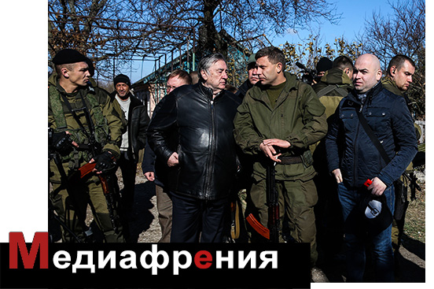
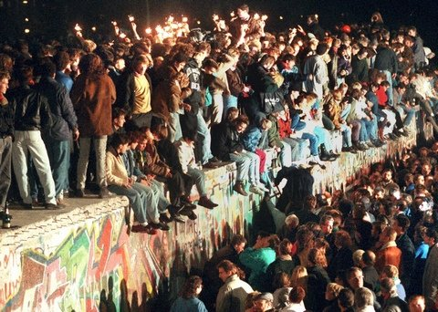

Медиафрения.Правда русского мира против западных истин
О том, почему в русской ментальности «правда» и «истина» скорее антонимы, чем синонимы, Николай Бердяев размышлял еще в сборнике «Вехи», но еще тревожнее думал об этой русской антиномии в статьях, которые начал писать сто лет назад и которые позднее вошли в сборник «Судьба России», пишет Игорь Яковенко в своей колонке для издания Ежедневный журнал.
«Русская нелюбовь к идеям и равнодушие к идеям нередко переходят в равнодушие к истине.Русский человек не очень ищет истины, он ищет правды, которую мыслит то религиозно, то социально, ищет спасения».
Сегодня, сто лет спустя, дистанция между русской правдой и западной истиной выросла многократно, а различия превратились в пропасть.Годы советской власти приучили к тому, что правда — это то, что хорошо для «нас»: СССР, КПСС, а в конечном счете — для начальственной номенклатуры.За 23 постсоветских года «правда-справедливость» окончательно трансформировалась в «правильность» как соответствие «понятиям».
Минувшая неделя стала торжеством русской правды.Путин публично любил историю и географию.По очереди.Географы узнали от президента, что «в любви вообще заключается смысл бытия».На суровом лице Шойгу, который сидел в президиуме, при этих словах не дрогнул ни один мускул.Видимо, Путин ему раньше сказал про смысл бытия.Зато сидящий в зале телеведущий Николай Дроздов просто светился от счастья, настолько ему понравилась путинская идея про любовь.
Историкам Путин объяснил, что их главная задача — достойно представлять интересы страны в информационном пространстве.И показал, как именно надо это делать, объяснив, что пакт Молотова-Риббентропа — это показатель миролюбия Сталина, а последующее вторжение Гитлера и Сталина в Польшу, то есть те события, с которых началась Вторая мировая, Путин объяснил тем, что Польша сама виновата, поскольку тоже не была безгрешна и «забрала часть Чехословакии», когда туда вошел Гитлер.Ну а потом «получила ответную шайбу».И далее Путин дает прямое и конкретное указание историкам: «серьезные исследования должны показать, что таковы были тогда методы внешней политики».То есть российские историки фактически получили политический заказ на доказательство равной (по меньшей мере) ответственности Польши за развязывание Второй мировой войны.
Чудеса русской исторической правды демонстрировало российское ТВ в день 7 ноября.Если судить по тому, что показывал телевизор, главное событие, которое в российской истории состоялось 7 ноября, произошло не 97 лет назад, в 1917-м, а 73 года назад, в 1941-м.И это был не Октябрьский переворот (псевдоним — Великая Октябрьская социалистическая революция), а парад в честь этого события, состоявшийся в 1941 году.Если эта тенденция «взвешивания» истории на весах правды русского мира продолжится, то через несколько лет главными праздниками нашей страны будут объявлены годовщины выступлений Путина по поводу неких малозначительных событий, которые произошли давно и о которых забыли бы, если бы по их поводу наше все не соизволил высказаться.
Казус Познера и Гусева в связи с казусом Плющева
Запись в микроблоге Александра Плющева и лобовое столкновение Михаила Лесина и Алексея Венедиктова по поводу увольнения журналиста стало центральным медийным событием ноября, и в зависимости от развития процесса может стать и медийным событием года.О фактической стороне дела я довольно подробно писал в «ЕЖе».Как и любое знаковое событие, «казус Плющева» породил массу комментариев, каждый из которых представляет собой микропортрет самого комментатора, а в целом из них можно составить портрет общества, по крайней мере, его части.
Владимир Познер: «Да, Плющев имеет право задавать любой вопрос.Но если я начальник радиостанции, где он работает, я могу считать, что вопрос этот неприличный и неприемлемый, что о смерти человека не шутят.И я могу как начальник его уволить».Далее Познер сообщил, что лично он, Познер, не хотел бы работать с человеком, который задает такие вопросы.
Павел Гусев, главный редактор и владелец «Московского комсомольца», председатель Союза журналистов Москвы сообщил радиостанции «Говорит Москва»: «На мой взгляд, то, что говорил Плющев, — неэтично.Я бы отнесся крайне отрицательно, если бы мой журналист такое сделал.Плющев должен сам подать заявление об уходе, чтобы не подставлять ни редакцию, ни Венедиктова и чтобы не было трудного выбора у собственника, который, кстати, по закону о СМИ может уволить любого сотрудника».Конец цитаты.
Павел Гусев не только главный редактор и владелец «МК».И не только председатель Союза журналистов Москвы.Он еще член президентского совета по правам человека.И во всех этих ипостасях Гусев должен быть профессионалом в вопросах СМИ.Выясняется, однако, что он не держал в руках закон о СМИ.Поскольку в этом законе ни слова не говорится о том, что «собственник может уволить любого сотрудника».А совсем наоборот, статья 18 прямо запрещает учредителю вмешиваться в редакционную политику, статья 19 защищает профессиональную самостоятельность редакции, а статья 20 требует, чтобы полномочия штатных сотрудников редакции, а также взаимные права и обязанности учредителя, редакции и главного редактора регулировались исключительно Уставом СМИ.А поскольку Устав ЗАО «Эхо Москвы» прием и увольнение журналистов делает возможным только по инициативе главного редактора, то и Гусев, и Познер попали пальцем в небо.
Понятно, что Гусеву как владельцу СМИ неприятны эти статьи закона и он старается их, что называется, «развидеть» (Make me unsee it!), но это не повод публично заявлять, что их нет.Данный эпизод и эта гусевская реплика лишний раз напоминают о той странной конструкции, которую представляет собой нынешний Союз журналистов, во главе которого стоит владелец одного из крупных медийных холдингов, то есть тот человек, для защиты от которого журналисты в нормальных странах как раз и объединяются в союзы.
Что же касается оскорбленных чувств Гусева, который «отнесся бы крайне отрицательно, если бы мой (то есть его, Гусева) журналист такое сделал», то Гусеву следовало бы посмотреть собственную газету.Например, «МК» за 6 ноября, материал о гибели актера Девотченко, который подготовила Екатерина Свешникова, штатный корреспондент «МК», то есть именно что его, Гусева, журналист.Свешникова сообщает, что погибший актер попрошайничал у жильцов и, выходя из квартиры, забывал надеть трусы.Тело погибшего актера еще не до конца остыло к моменту публикации.Девотченко знали миллионы людей и очень многие любили.Для сотен тысяч людей его гибель была шоком.Публикация Свешниковой стала глумлением над памятью актера.И это был не блог, а самое что ни на есть массовое СМИ.
Если говорить о микроблогах, то здесь публичные люди ведут себя порой с такой непосредственностью, что Плющеву и не снилась.И абсолютно безнаказанно.Никаких последствий не имела расистская «банановая» шутка депутата Госдумы Ирины Родниной в отношении Обамы.После некоторых колебаний все же приведу запись на смерть Валерии Новодворской, которую опубликовал в своем микроблоге спецкорр «Комсомолки» Дмитрий Стешин: «Баба Лера все.Сейчас ее в аду черти жарят, буженины выйдет столько, что Сатане останется на сэндвичи к утреннему кофе».Ау, Павел Николаевич, Владимир Владимирович!У вас нет желания выступить по этому поводу?Или задать вопрос Владимиру Николаевичу Сунгоркину, что он творит со своей газетой и заодно с ее аудиторией?
Да, и кстати, Павел Николаевич и Владимир Владимирович, вам обоим не кажется, что вы, возможно, могли бы предотвратить гибель Александра Иванова, того самого, сына нынешнего главы администрации президента, по поводу которого написал Плющев?Тогда, 9 лет назад, когда Александр Иванов убил пожилую женщину, он был сыном министра обороны и отец, используя свои возможности, отмазал ныне покойного сына и добился осуждения невиновного — зятя убитой женщины.Это было событие настолько чудовищное, что мимо него было невозможно пройти.Страна прошла мимо.Точнее, страну провели мимо те, кто должен был ее остановить.Те, кто имел тогда ресурсы влияния и ресурсы информации.Павел Гусев и Владимир Познер имели тогда и имеют сейчас ресурсы несопоставимо большие, чем у Александра Плющева.Возможно, тогда, в 2005-м, был еще небольшой шанс остановить сползание страны в тотальный мрак, в который она уже практически неостановимо ползет сейчас.Остановить не в одиночку и не вдвоем, а мобилизуя общество.И вопиющий случай с сыном министра обороны был одной из многих развилок, на которых можно было собрать силы общества и заставить власть уважать закон, а не понятия.И тогда Александр Иванов получил бы свой срок и к сегодняшнему дню уже давно вышел бы на свободу.Живой.Возможно, к тому времени, к 2005 году, уже было поздно и ничего бы не вышло.Но ведь никто из тех, кто имел ресурсы, даже и не пытался…
А сейчас в стране идет война.Постоянно убивают на Северном Кавказе.Россия практически открыто воюет с Украиной.Госдума ведет войну с населением с помощью бешеного принтера.Федеральные СМИ бомбардируют мозги сограждан.Война у нас гибридная, поэтому и вовлечение в нее у разных людей разное.Дмитрий Стешин из «КП» в войне по уши, поэтому у него смерть врага, Валерии Новодворской, вызывает утробную радость.Депутат Роднина, видимо, считает себя мобилизованной на холодную войну по партийному призыву, поэтому тычет банан американскому президенту.Плющев, как и многие, вовлечен в информационную войну.Не удержался, пнул мертвого врага.Поступил плохо.Но уж точно не Лесину с Волиным, организаторам информационной войны, не Доренко, активному ее участнику, и не Гусеву с Познером, весомым игрокам на медийном поле России, самим своим присутствием в этом поле участвующим в этой войне, — не им осуждать Плющева и требовать его увольнения.
Органчики, юродивые и кукловоды
Классификация обитателей российского телевизора не исчерпывается этими тремя категориями, но эти три встречаются чаще всего.Практически все депутаты Госдумы и члены Совета Федерации, появляющиеся в эфире, и большая часть экспертов — это органчики.В отличие от героя Салтыкова-Щедрина, Дементия Варламовича Брудастого, голова которого могла произносить лишь две фразы — «Не потерплю!»и «Разорю!», — большинство российских думцев и сенаторов имеют значительно больший запас арий.Но поскольку этот запас не превышает у среднего парламентария двух десятков, то предсказать, что будет исполнять конкретный участник, можно с большой долей вероятности.
Юродивые в отличие от органчиков склонны к импровизации, поэтому в точности предугадать, что именно исполнит юродивый в данный момент, бывает не просто.Вот, например, краткое изложение арии Александра Проханова в «Воскресном вечере» под управлением Владимира Соловьева: «Это загадочная война.Это партнеры-враги.Они платят пенсии (это Проханов об Украине, которая действительно платит пенсии жителям ДНР И ЛНР, но об этом в студии Соловьева говорить считается неприличным).С двух сторон воюют офицеры, которые заканчивали одни и те же военные училища».
Пока Проханов говорил, студия Соловьева ошарашенно молчала, никто не перебивал.Это же соловей Генштаба говорит, а не Надеждин и не Гозман какой, прости Господи.Но, когда Проханов замолчал, тут же заголосили органчики.Уполномоченный по детям Павел Астахов злорадно заметил, что «благодушная картина, нарисованная Прохановым, разбивается трупами детей, убитых в Новороссии».Более развернутую отповедь сбившемуся вдруг с пути писателю дал Сергей Миронов, который сначала недоуменно отметил, что у Проханова в этот раз все звучит как-то уж очень миролюбиво.И сразу же перешел к конкретике, сообщив, что нам надо признать ДНР и ЛНР, чтобы начать открыто помогать этим республикам, причем и в военном отношении.
— То есть войну начать?— деловито уточнил Соловьев.
— Войны мы не должны бояться!— ответил органчик Миронов.
— Я нашел ястреба!— радостно воскликнул Соловьев.
Ему не хватало сачка, чтобы приобрести окончательное сходство с орнитологом, обнаружившим редкий подвид.
Тут между Прохановым и Мироновым случилось нечто, что за неимением другого слова можно назвать дискуссией.Проханов объявил, что Минские соглашения себя исчерпали, а дальше — зима, замерзание, инициатива перейдет к Киеву.Донецк и Луганск будут гнуться, посетовал Проханов.Вот, Миронов говорил, что надо ввести войска, провокационно заявил Проханов.«Нет, я такого не говорил!»— тут же закричал органчик Миронов.Было ясно, что фраза «ввести войска» в программе органчика Миронова не только не присутствует, но и жестко заблокирована.
— Добровольцы с военной техникой войдут, — нашел правильные слова и правильный мотив Миронов.
— Вот мы возьмем Мариуполь, — как о свершившемся факте объявил Проханов.— Будем ли мы воевать с Украиной?
Проханов решил добиться от Миронова правды, не сходя с места.Миронов было опять начал про добровольцев, которые входят с военной техникой, но тут Соловьев понял, что эти двое так и будут ходить по кругу, и прервал дискуссию логичным предложением сходить за диванчиками, чтобы два диванных генерала продолжили свои баталии в привычном формате.
Некоторое оживление внесли органчики из Новороссии, Алексей Карякин, председатель Народного совета ЛНР, и особенно Сергей Барышников, представляющий парламент Новороссии.
Сначала они выступали вяло, видно робели с непривычки.Но им помог Борис Надеждин, которого теперь регулярно приглашают к Соловьеву в качестве юродивого от оппозиции.
— Украинская армия воюет на своей земле, — честно играя отведенную ему роль, сообщил Надеждин.Это скандальное заявление, конечно, сильно оживило обстановку в студии.
— Молчи, укроп!— заорал на него Проханов.— Укры — фашисты!Война в Новороссии — это мировая война, война против мирового фашизма!— Проханов выдал наконец одну из тех реприз, ради которых его все время зовет Соловьев.
И тут настало время Сергея Барышникова.
— Мы все эти годы были оккупированы Украиной!— сообщил депутат парламента Новороссии.Полагаю, что после этой реплики Соловьев сделает ему абонемент в свою студию.
Хранители стены
В минувшую неделю мир отмечал 25 лет разрушения Берлинской стены.Этому событию была посвящена вторая часть «Воскресного вечера» Соловьева.Тон задал, естественно, Александр Проханов, который объяснил, что, когда открыли Берлинскую стену, оттуда хлынул план Барбаросса.И он, не Проханов, а план Барбаросса, превратил нас в оккупированную страну.
Режиссер Иосиф Райхельгауз пытался донести мысль, что стена остается у нас в сознании, что мы — единственный народ, который даже на кладбищах строит ограды.При упоминании кладбища большинство обитателей студии Соловьева почувствовали себя на своей исконной почве и хором потребовали, чтобы режиссер «оставил в покое наши могилы и наших мертвецов».
Депутат Никонов предложил присутствующим провести мысленный эксперимент.«Вот если бы в СССР или в ГДР были бы универмаги типа »Ашана», то ничего не было бы», —- торжествующе воскликнул депутат Никонов.«То есть дело в отсутствии еды, а не в идеях», — провидчески заметил депутат.

Мне способ рассуждения депутата Никонова напомнил старую историю с натуралистом-экспериментатором, который, оторвав мухе крылья, приказал ей лететь.А когда несчастное насекомое приказ проигнорировало и продолжало упорно ползать, натуралист торжественно записал в дневник наблюдения: «Ампутация крыльев мухи привела к потере слуха.Значит, мухи слышат крыльями».
Возвращаясь от травмированной мухи к депутату Никонову, отметим, что в депутатскую голову как-то не поместилась гипотеза, что отсутствие в государстве правильных идей и есть главная причина отсутствия еды.
Депутат-коммунист Калашников все время добрым словом поминал Сталина и очень недобрым Горбачева, которого они с Прохановым иначе как предателем не называли.Главная претензия заключалась в том, что Горбачев не потребовал серьезных компенсаций за то, что он позволил сломать стену.
Попытку заступиться за Горбачева предпринял политолог Злобин, стабильно играющий роль юродивого от Госдепа в студии Соловьева.Злобин пытался объяснить, что «карты у Горбачева в этой игре были слабые».Народ в России голодал, были карточки, объяснял Злобин.
«Мы голодали?!»— удивился Соловьев.Меня несколько удивило это удивление телеведущего.В 1989 году ему было 26 лет.Вполне взрослый мальчик не мог не знать и не видеть «колбасные электрички» в Москву и из Москвы.Не мог не знать о дефиците, карточках на продукты и товары первой необходимости.Впрочем, что это я.Для того чтобы видеть реальные проблемы в прошлом и настоящем, необходимо руководствоваться критерием истины, а это критерий растленного Запада.А если прикрыться «правдой русского мира», то все наши проблемы куда-то исчезают.
Вот, например, как Дмитрий Киселев в «Вестях недели» элегантно описал ситуацию на валютном рынке: «Рубль на этой неделе планировал вниз в поисках нового равновесия».Ну ведь красиво же сказано, согласитесь!А если руководствоваться западным критерием истины, то та же ситуация непременно будет описана каким-нибудь скверным словом.В лучшем случае, термином «задница».
Автор: Игорь Яковенко, Ежедневный журнал.
Posted On: 2014-11-11T21:00:00

Content Date: 2014-11-11
Download Date: 2021-07-16
Document ID: L0C04FID0